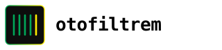

02
Stencil / Part No.
Önceki seçilen yön — referans.
Önceki seçilen yön — referans.
Dikey çubuklar filtre pleat'lerini temsil eder; biri sarı ile öne çıkar. Yalnız wordmark.

Altıgen form (mekanik / mühendislik) içinde sarı diyagonal — akış / filtreden geçiş.
Yeşil parantezler arasında sarı dikdörtgen kartuş — filtre kasası içinde eleman.